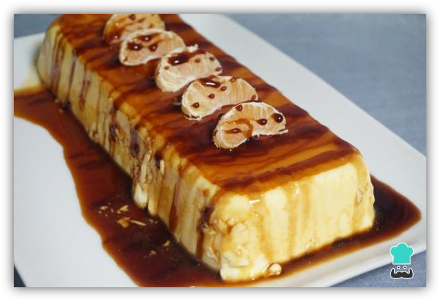
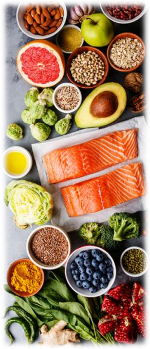

POSTRES
Pastel De Naranja

Espectativa
Ingredientes:
- 500 mililitros de zumo de naranja
- 400 mililitros de nata para montar (2 tazas)
- 350 gramos de leche condensada
- 10 hojas de gelatina
- 1 bote de caramelo líquido
- 1 unidad de naranja o mandarina para decorar
Pasos:
- Preparamos los ingredientes para hacer nuestro pastel de naranja y caramelo sin horno.
- Ponemos las hojas de gelatina en un recipiente con agua durante 5 minutos o el tiempo que mande el fabricante.
- Exprimimos las naranjas hasta obtener los 500 ml de zumo.
- En una olla o cazo pequeño ponemos el zumo, la nata y la leche condensada. Lo ponemos a fuego bajo y removemos hasta que esté caliente.
- Cuando esté caliente la mezcla anterior añadimos las hojas de gelatina perfectamente escurridas y removemos con una lengua pastelera o cuchara de madera hasta que se disuelvan. Retiramos del fuego.
- En un molde donde queramos hacer la tarta de naranja y gelatina ponemos el caramelo líquido repartido uniformemente.
- Incorporamos la crema de la tarta de naranja sin horno y la metemos a la nevera un mínimo de 5-6 horas para que se cuaje bien, o incluso mejor de un día para otro.
- A la hora de servir, ponemos la torta de naranja sin horno en una fuente y la acompañamos con una naranja o una mandarina por encima por ejemplo. Y ya tenemos listo el pastel de naranja sin horno para servir cuando gustéis.


Este es un sitio de recetas rápidas que puedes hacer facilmente para una reunión, sorpresa, algo casual o simplemente para ti.